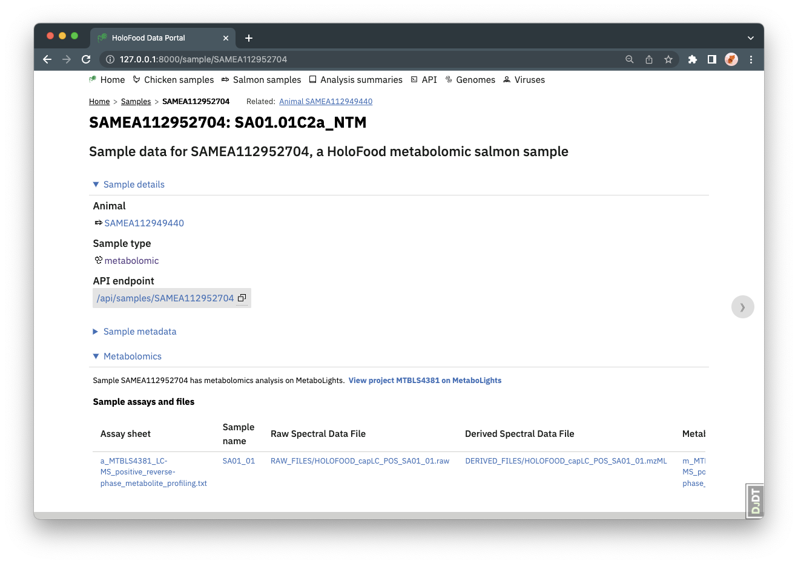

Browsing the website
Global Search
There is a a site-wide (“global”) search box at the top of the data portal landing page and most other pages. This searches over host and derived samples accessions, titles, systems, and types; genome and viral catalogue ids, titles, biomes, and related data; MAG accessions and taxonomies; viral fragment ids and contig ids; and this documentation.
If you search for valid sample, animal, or MAG accessions, the search will take you straight to an appropriate view in the portal. Otherwise, you’ll see a normal list of search results.
Finding Samples
Samples can be found from the “Chicken samples” and “Salmon samples” navigation items. On the samples listing pages, there are various filters available to limit which samples are shown in the table. For example, you can find all samples from a particular animal, or all metabolomics type samples (each sample has a particular type).
Samples may be linked to metadata (almost always), metagenomic, metabolomic, or host-genomic datasets. Other sample types have their results data in the sample metadata.
Treatment search
Samples may also be search for by the host-animal’s treatment condition. The “Treatment search” filter is a case-insensitive text search over the samples’ animal treatment metadata. Specifically, it filters to samples whose host animal has all of the query strings in the animal’s BioSamples metadata fields: “Sampling time”, “Treatment name”, “Treatment description”, “Treatment code”, “Treatment concentration”.
This means you can search for e.g. ferm algae 2.0% "day 60" to find samples from animals treated with Fermented Algae at a 2.0% concentration and collected on trial Day 60.
Note the use of lexical grouping around the “day 60” – this is useful when searching for, e.g. day 0 which would otherwise partially match day 60.
Sample detail
To view detail about a particular sample, click “View” on its row of the table.
The sample detail page contains information help about the sample in the various supporting databases. Metadata (from BioSamples) is shown in full, in a table. Metagenomic and metabolomic data are shown in summary form, with links to the respective public websites where those analyses are held.
The API section shows the API endpoint for this particular sample. You can copy this into a script, for example, to programmatically pull the data.
Downloading sample lists and metadata
The complete sample list can be exported to TSV using the “Download all as TSV” button.
The “Download all as TSV” button does reflect any filters on the website table – it contains the complete list.
The complete metadata for a sample can be downloaded using the “Download all as TSV” button within the “Sample metadata” section of a sample detail page. For sample types where the metadata also includes results data (like histology measurements), the section is instead called “Sample data”.
Finding sample data in other public repositories
Metagenomics
Some samples have metagenomics data, in MGnify. These can be found from the samples listing page by setting the Sample type filter to metagenomic_assembly or metagenomic_amplicon.
MGnify analyses of a sample (identified with MGYA accessions) are listed and linked to from the sample detail page.
Metabolomics
Some other samples have metabolomics data, in MetaboLights. These can be found form the samples listing page by setting the Sample type filter to metabolomic.
MetaboLights data are identified at a Project level, with MTBLS accessions. MetaboLights does not store samples as independent objects, instead it stores lists of samples and files (and more) for the project. So, the HoloFood data portal sample detail page shows a filtered table of the MetaboLights project’s files, that relate to this sample. Following these file links will download the file.
MetaboLights follows the ISA framework, so the table shown is a collection of files from the one or more assay sheets relevant to this sample. Raw and derived files are available.

Finding analysis summaries
Analysis summaries are linked to samples or catalogues. Any analysis summaries that mention a sample are shown at the bottom of the sample’s detail page.

Analysis summaries also link back to the samples and/or catalogues they refer to. A complete list of analysis summaries can also be found from the navigation bar.
Using the catalogues
MAG Catalogues
Metagenome Assembled Genome (MAG) Catalogues are available for selected biomes. HoloFood MAGs are those created using only reads from HoloFood samples. However, there are other non-HoloFood public data available for the same biomes sampled by this project.
Each HoloFood MAG Catalogue therefore referenced a public MAG Catalogue in MGnify, which is a superset of the HoloFood data and other public data. This is linked from each catalogue page on the HoloFood Data Portal site.
Each MAG in the HoloFood catalogue references a MAG in the MGnify catalogue which represents the same species. In some cases, the HoloFood MAG is the best available sequence for that species level cluster, so the HoloFood MAG points to itself on the MGnify website. In other cases, a more complete, less contaminated, or isolate genome exists representing the same species, so the HoloFood MAG points to this better representative on MGnify.

MAG Catalogues can be found from the “Genomes” navigation item, and then selecting a catalogue in the “Catalogues” sub-navigation. MAGs can be found by searching on accession or taxonomy, or for the accession of the cluster representative.
The MAGs in a catalogue can be downloaded as a TSV file, using the “Download all as TSV” button.
Viral Catalogues
 Viral catalogues are lists of the unique (at species-level) viruses found in HoloFood samples. Viral catalogues can be found from the “Viruses” navigation item, and then selecting a catalogue in the “Catalogues” sub-navigation.
Viral catalogues are lists of the unique (at species-level) viruses found in HoloFood samples. Viral catalogues can be found from the “Viruses” navigation item, and then selecting a catalogue in the “Catalogues” sub-navigation.
Viral fragment can be searched in various ways, like the parent contig ID, or the taxonomy of the host MAG. Host MAGs are only assigned where there is an exact match between the viral sequence and a host MAG.
By default, only species-level clusters are shown (a representative viral fragment is shown).
This can be changed either by clicking the “View cluster” link within the table, to see the remainder of that specific cluster, or by changing the “Cluster visibility” dropdown in the filters to the left of the table.
Pressing “View contig” on a viral fragment in the table opens the contig viewer. This loads the contig from MGnify, as well as MGnify’s annotations on the contig. These can be explored in more detail by clicking the parent contig in the table, which links to MGnify.
In the contig viewer, ViPhOG annotations are shown. These are unique to the data portal. The viral region is highlighted in green. The GFF containing the ViPhOG(s) can also be downloaded, by viewing a viral fragment and pressing “Download ViPhOGs GFF”.